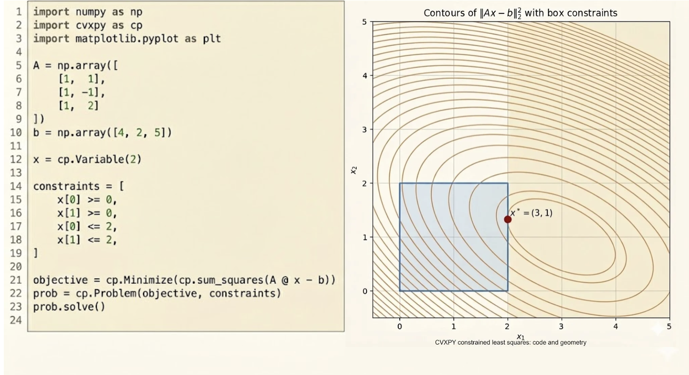
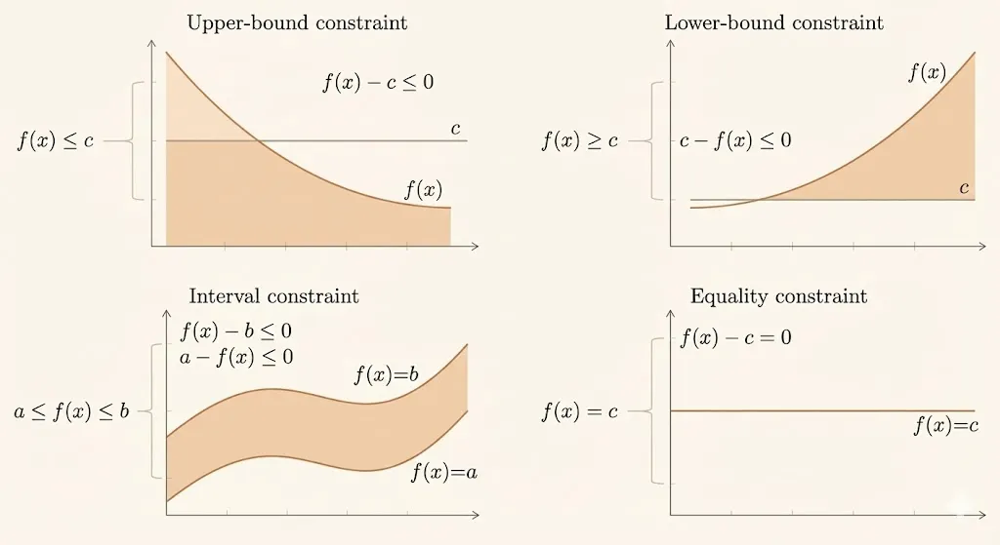

EE 364A (Convex Optimization): Chapter 4.1 - Optimization Problems
Convex Optimization Textbook - Chapter 4.1 (page 127)

Basic Terminology and Notation
An optimization problem in standard form is written as:
\[ \begin{aligned} \text{minimize } \quad & f_0(x) \\ \text{subject to } \quad & f_i(x) \le 0, \quad i=1,...,m \\ & h_i(x) = 0, \quad i=1,...,p \end{aligned} \]

Key Components
- Decision variable: \(x \in \mathbb{R}^n\) — the variable we optimize over
- Objective function (or cost function): \(f_0: \mathbb{R}^n \to \mathbb{R}\) — the function we want to minimize
- Inequality constraints: \(f_i: \mathbb{R}^n \to \mathbb{R}, \quad i=1,...,m\)
- Equality constraints: \(h_i: \mathbb{R}^n \to \mathbb{R}, \quad i=1,...,p\)
Domain and Feasibility
The domain \(\mathcal{D}\) of the optimization problem is:
\[ \mathcal{D} = \bigcap_{i=0}^{m} \mathrm{dom} f_i \cap \bigcap_{i=1}^{p} \mathrm{dom} h_i \]
A point \(x \in \mathcal{D}\) is feasible if it satisfies all constraints:
\[ f_i(x) \le 0, \quad i=1,...,m, \qquad h_i(x) = 0, \quad i=1,...,p \]
The feasible set (or constraint set) is the set of all feasible points.
If the problem has at least one feasible point, we say the problem is feasible; otherwise it is infeasible.

Optimal Values
The optimal value \(p^*\) of the problem is defined as:
\[ p^* = \inf \{f_0(x) \mid f_i(x) \le 0, i=1,...,m, \, h_i(x) = 0, i=1,...,p\} \]
- If the problem is infeasible, \(p^* = +\infty\) (by convention)
- If there are feasible points \(x_k\) with \(f_0(x_k) \to -\infty\), we say \(p^* = -\infty\) and the problem is unbounded below
A feasible point \(x^*\) is optimal (or a solution to the problem) if \(f_0(x^*) = p^*\).
The set of all optimal points is the optimal set, denoted \(X_{\mathrm{opt}}\):
\[ X_{\mathrm{opt}} = \{x \mid f_i(x) \le 0, i=1,...,m, \, h_i(x) = 0, i=1,...,p, \, f_0(x) = p^*\} \]
If \(X_{\mathrm{opt}}\) is empty, we say the optimal value is not attained or not achieved.
Local Optimality
A feasible point \(x\) is locally optimal if there exists an \(R > 0\) such that:
\[ f_0(x) = \inf \{f_0(z) \mid f_i(z) \le 0, i=1,...,m, \, h_i(z) = 0, i=1,...,p, \, \|z-x\|_2 \le R\} \]
In other words, \(x\) minimizes \(f_0\) over nearby feasible points.

For convex optimization problems, any locally optimal point is globally optimal. This is one of the key advantages of convex optimization.
Standard Form for Optimization Problems
A general optimization problem can be converted to standard form:
\[ \begin{aligned} \text{minimize } \quad & f_0(x) \\ \text{subject to } \quad & f_i(x) \le 0, \quad i=1,...,m \\ & Ax = b \end{aligned} \]

Converting to Standard Form
Most optimization problems can be transformed to standard form through simple manipulations:
Maximization problems: Maximize \(f_0(x)\) becomes minimize \(-f_0(x)\)
Constraint inequalities:
- \(f_i(x) \ge 0\) becomes \(-f_i(x) \le 0\)
- \(f_i(x) < 0\) becomes \(f_i(x) \le 0\) (strict inequalities are converted to non-strict)
Equality constraints:
- \(h_i(x) = 0\) can be expressed as two inequalities: \(h_i(x) \le 0\) and \(-h_i(x) \le 0\)
- Or equivalently: \(|h_i(x)| \le 0\)
Equivalent Problems
Two optimization problems are equivalent if from the solution of one, a solution of the other is readily found, and vice versa.
Common Equivalence Transformations
1. Change of Variables
If \(\phi: \mathbb{R}^n \to \mathbb{R}^n\) is one-to-one with image covering the problem domain, then:
Original problem: \[ \begin{aligned} \text{minimize } \quad & f_0(x) \\ \text{subject to } \quad & f_i(x) \le 0, \quad i=1,...,m \\ & h_i(x) = 0, \quad i=1,...,p \end{aligned} \]
Equivalent problem (with \(x = \phi(z)\)): \[ \begin{aligned} \text{minimize } \quad & f_0(\phi(z)) \\ \text{subject to } \quad & f_i(\phi(z)) \le 0, \quad i=1,...,m \\ & h_i(\phi(z)) = 0, \quad i=1,...,p \end{aligned} \]
2. Transformation of Objective and Constraint Functions
If \(\psi_0: \mathbb{R} \to \mathbb{R}\) is monotone increasing, the problems:
- Minimize \(f_0(x)\)
- Minimize \(\psi_0(f_0(x))\)
are equivalent.
Example: Minimizing \(\|Ax-b\|_2\) is equivalent to minimizing \(\|Ax-b\|_2^2\).
3. Slack Variables
Inequality constraints \(f_i(x) \le 0\) can be replaced by introducing slack variables \(s_i\):
\[ f_i(x) + s_i = 0, \quad s_i \ge 0 \]
This converts inequality constraints to equality constraints plus nonnegativity constraints.
4. Eliminating Equality Constraints
Linear equality constraints \(Ax = b\) can be eliminated by solving for some variables in terms of others.
If \(Ax = b\) has rank \(p\), we can write:
\[ x = x_0 + Fu \]
where \(x_0\) is a particular solution and \(F\) is a matrix whose columns form a basis for the nullspace of \(A\).
The optimization problem becomes:
\[ \begin{aligned} \text{minimize } \quad & f_0(x_0 + Fu) \\ \text{subject to } \quad & f_i(x_0 + Fu) \le 0, \quad i=1,...,m \end{aligned} \]
5. Introducing New Variables and Constraints
We can sometimes simplify a problem by introducing additional variables and constraints.
Example: Minimize \(\max_{i=1,...,m} f_i(x)\) is equivalent to:
\[ \begin{aligned} \text{minimize } \quad & t \\ \text{subject to } \quad & f_i(x) \le t, \quad i=1,...,m \end{aligned} \]
6. Epigraph Form
The optimization problem:
\[ \begin{aligned} \text{minimize } \quad & f_0(x) \\ \text{subject to } \quad & f_i(x) \le 0, \quad i=1,...,m \\ & h_i(x) = 0, \quad i=1,...,p \end{aligned} \]
is equivalent to:
\[ \begin{aligned} \text{minimize } \quad & t \\ \text{subject to } \quad & f_0(x) - t \le 0 \\ & f_i(x) \le 0, \quad i=1,...,m \\ & h_i(x) = 0, \quad i=1,...,p \end{aligned} \]
This is called the epigraph form because the variables \((x,t)\) range over the epigraph of \(f_0\).
Two Ways to Describe an Optimization Problem
1. Parameter Problem Description
The problem is described by explicitly giving the functions that appear:
\[ \begin{aligned} \text{minimize } \quad & f_0(x) \\ \text{subject to } \quad & f_i(x) \le 0, \quad i=1,...,m \\ & h_i(x) = 0, \quad i=1,...,p \end{aligned} \]
Example: Least squares problem \[ \text{minimize } \quad \|Ax-b\|_2^2 \]
where \(A \in \mathbb{R}^{m \times n}\) and \(b \in \mathbb{R}^m\) are the problem parameters.
2. Oracle Problem Description
The problem is described in terms of oracles (subroutines) that answer questions about the problem.
For example, an oracle might: - Evaluate \(f_i(x)\) at a given \(x\) - Evaluate \(\nabla f_i(x)\) at a given \(x\) - Check feasibility of a point \(x\)
- Parameter description: More explicit, suitable for theoretical analysis and algorithm design
- Oracle description: More abstract, focuses on computational complexity and query efficiency
The choice between them depends on the context. Parameter descriptions are common in convex optimization, while oracle descriptions are more common in complexity theory and black-box optimization.
Summary
This lecture covered:
- Basic terminology: Decision variables, objective functions, constraints, domain, feasibility, optimal values, and local optimality
- Standard form: Converting general optimization problems to the canonical form with inequality and equality constraints
- Equivalent problems: Transformations that preserve solutions including change of variables, monotone transformations, slack variables, constraint elimination, and epigraph form
- Problem descriptions: Parameter descriptions (explicit functions) vs oracle descriptions (query interfaces)
These concepts form the foundation for studying convex optimization in subsequent lectures.